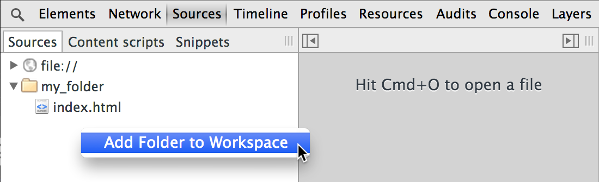
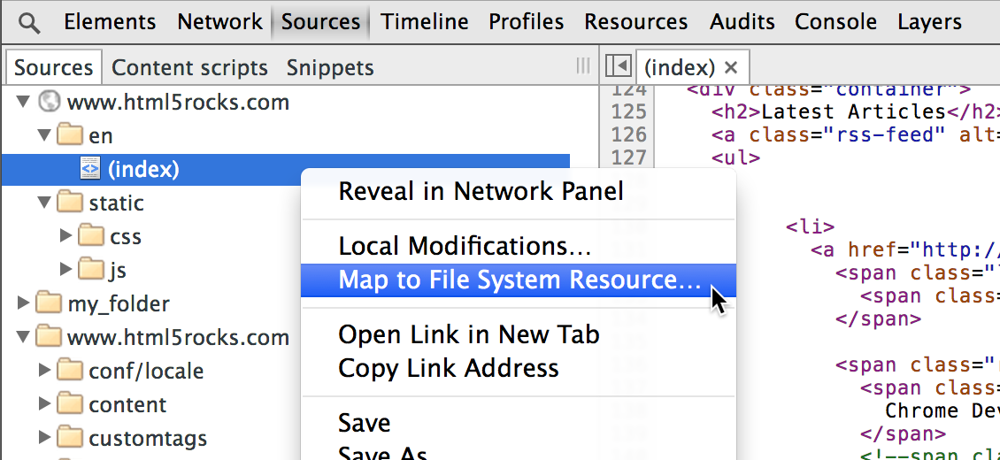
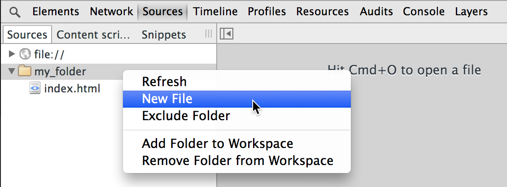
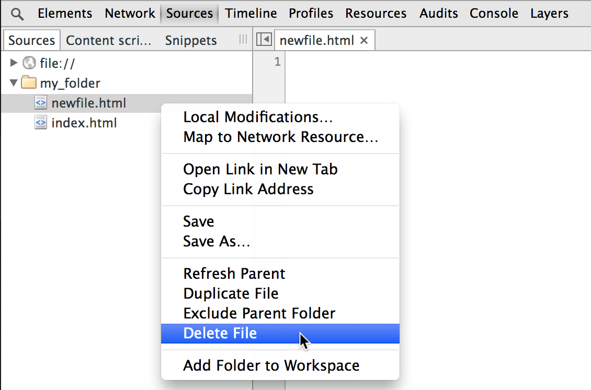
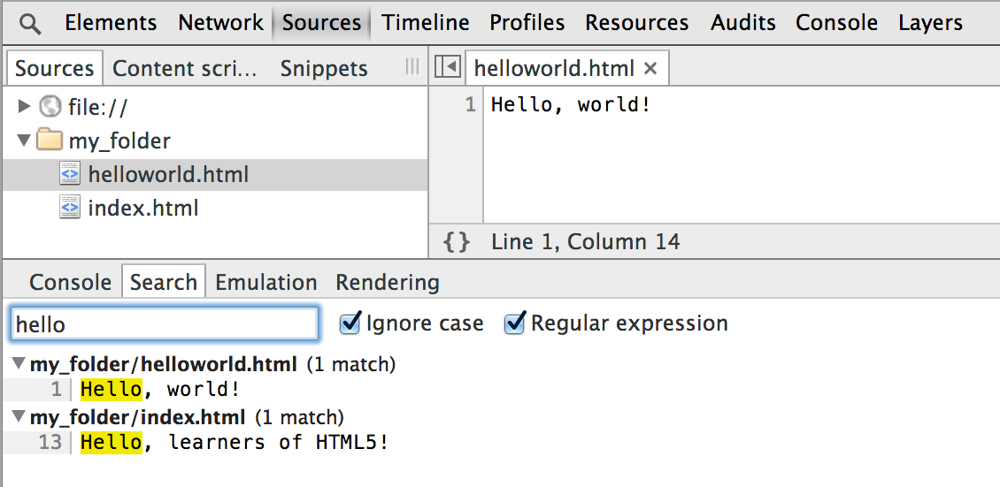

The DevTools docs have moved! Read the latest version of this article and head over to the new home of Chrome DevTools for the latest tutorials, docs and updates.
Chrome DevTools lets you make changes to elements of the webpage or the CSS and see your changes immediately. But what good is that to your authoring workflow if you have to copy-and-paste the changes to an external editor all the time? Workspaces helps you make those changes persist to disk without having to leave the Chrome DevTools to do so.
With Workspaces, you can edit any type of source file from within the Sources panel and save your changes to disk. And you can map resources served from a local web server to files on disk, so when you change and save those files, you can view them as if they were being served. And if you have the right mapping set up, Style changes on the Elements panel persist to disk automatically.
To make a local folder’s source files editable in the Sources panel, right-click in the left panel of Sources and select Add Folder to Workspace. This launches you into a file dialog where you can choose a new folder to add to your Workspaces. (It does not add the currently highlighted folder to your Workspaces.)

Click Allow when Chrome brings up the yellow banner at the top saying “DevTools requests full access to [path to your folder]”.
You can now edit any of the source files in that folder or its subfolders in Chrome. “Source files” in this case is not limited to HTML and CSS and Javascript, but can be anything, including markdown and JSON.
The real power of Workspaces lies in being able to map a local file to a URL (or “Network Resource”). Whenever Chrome loads the mapped URL, it displays the workspace folder contents in place of the network folder contents. It’s as if it’s being served on the web, but you can modify it with DevTools and save the changes persistently to the local file.
To map your website to a local workspace folder:

The Sources panel should now show just the contents of your site's local workspace folder, not the localhost sources.
You can also do this the other way around, mapping a workspace folder to a URL, using Map to Network Resource. Keep in mind that not all network resource files may be loaded into the browser to map from local files, but all of your local files should be available to map to a URL. Mapping one file within a workspace should map most of the website to that workspace.
Workspaces makes a lot of your workflow simpler, without having to keep switching back and forth between your Chrome browser and an external editor. However, of course, there are a few things to be aware of:
In addition to editing existing files, you can also add and delete files in the local directory you’re using for Workspaces.
Right-click on a folder in the left Sources panel and select New File.

Right-click on a file in the left Sources panel and select Delete File.

You can also duplicate a file by selecting Duplicate File. The new file shows up in the Sources panel and you can enter a new name for it (it doesn’t just create “Copy of myfile.txt”).
Now that you can create (or delete) files directly in Workspaces, the Sources directory will also automatically refresh and show these new files. If not, you can always right-click on a folder and select Refresh from the pop-up menu to force a refresh.
This is also useful if you happen to change your files open in another editor and want the changes to show up in DevTools. Usually DevTools catches your refreshes automatically, even from an external editor, but if you have to recompile an HTML file or a CSS file, you may need to do a refresh.
When searching for a loaded file normally in DevTools, you press Ctrl + O (Cmd + O on Mac) to open a dialog and search for a file name. You can still do this in Workspaces, only it searches through both the remote loaded files AND the local files in your Workspace folder.
There is also a mechanism for searching through the text of files, so you can search for strings across all of the files in your workspaces as well as all of the files loaded into DevTools. You can either search for a string or for a regular expression, and we match every occurrence in every file or page.
To search for text across multiple files in Workspaces:
